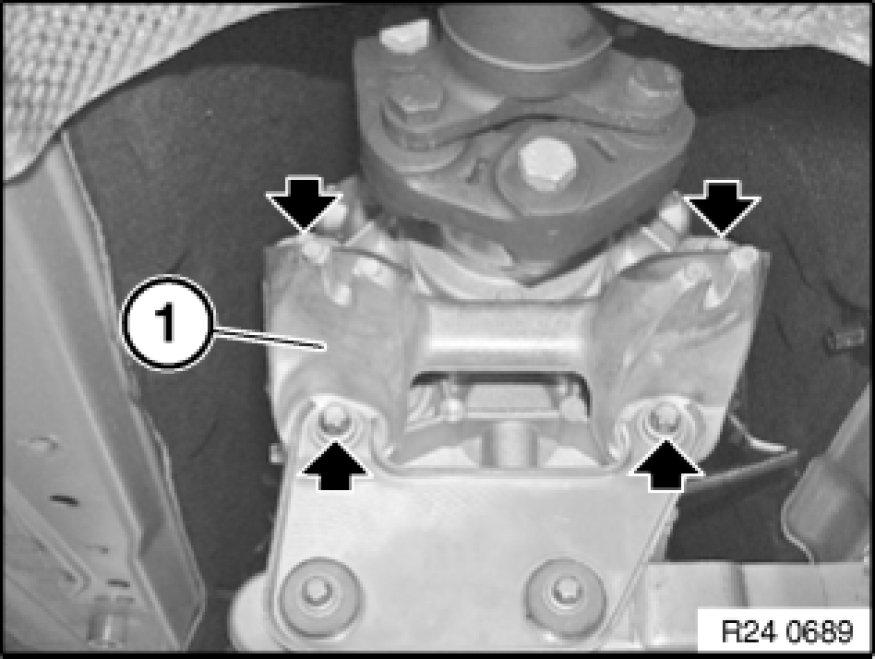
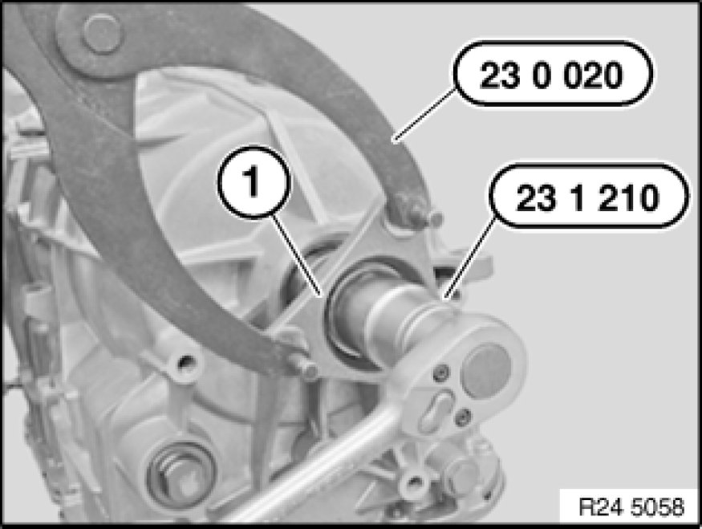
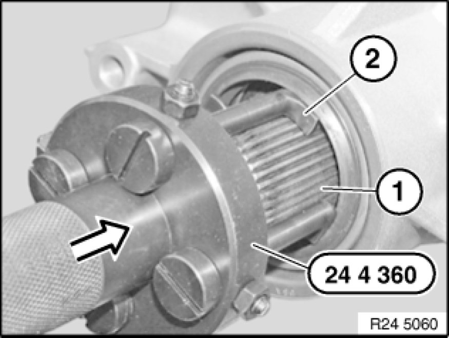
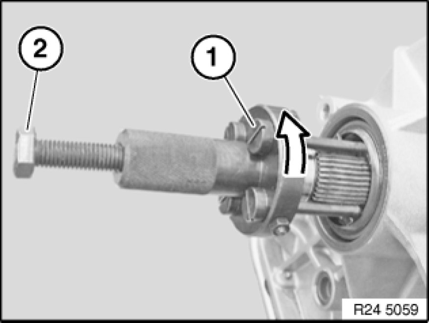
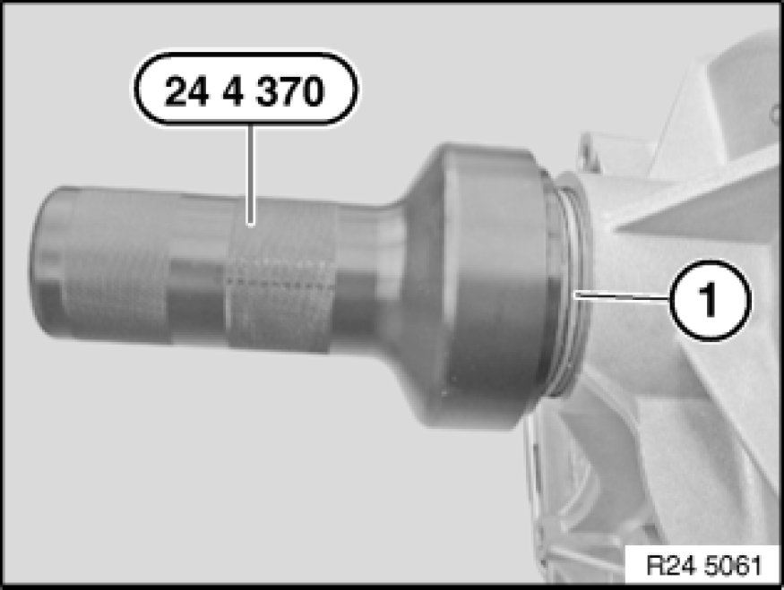

24 13 014 Replacing Output Flange Radial Shaft Seal (GA6L45R)
24 13 014 - Replacing output flange shaft seal (GA6L45R)

Special tools required:

Important!
After completion of work, check transmission fluid level 00 11 237 Checking/Topping Up Fluid Level In Automatic Transmission (GA6L45R).
Use only the approved transmission fluid.
Failure to comply with this requirement will result in serious damage to the automatic transmission!

Necessary preliminary tasks:
- Remove underbody protection
- Remove heat shields
- Remove complete exhaust system Service and Repair
- Remove front muffler (N45T/N46T)
- Remove transmission cross-member 22 32 050 Replacing Crossmember For Transmission Mounting
- Remove propeller shaft from transmission.
- Release centre bearing.
- Tie propeller shaft to one side.
Tasks are described in Removing propeller shaft 26 11 000 Removing and Installing Propeller Shaft (Cardan Universal Joint) Completely.
Note:
To rotate propeller shaft, unlock parking gear.

Release screws.
Remove transmission bearing block (1).
Tightening torque 24 71 6AZ 24 71 Transmission Mounting.

Grip output flange (1) with special tool 23 0 020.
Release nut with special tool 23 1 210.
Tightening torque: 24 13 3AZ [1][2]24 13 Transmission Extension, Bearings, Sealing Ring.
Installation Note:
Apply a streak of Loctite 277 over complete thread width.
Replace nut and secure with a mandrel (8 mm) by caulking.

Detach output flange from output shaft.
Remove spacer.

Push special tool 24 4 360 onto output shaft (1).
Locking hooks (2) must enter completely.

Turn locks (1) counterclockwise.
Screw in bolt (2) until radial shaft seal is released.

Oil sealing lip on radial shaft seal (1).
Drive radial shaft seal (1) firmly home with special tool 24 4 370.